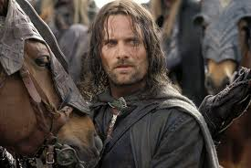

pradzia 1


Sarasai
Pirkiniu sarasas
Obuoliai
Kriauses
Batonas
Pyragas
Bulves
TOP 5 filmai:
- Pirmas filmas
- Antras filmas
- Trecias filmas
- Ketvirtas filmas
- Penktas filmas
Tinklalapiu kurimas
Frontend, naudojamos technologijos:
- HTML
- CSS
- JavaScript, galima naudoti siuos karkasus:
- jQuery
- AngularJS
- ReactJS
- ...
Backend, galima rinktis norima technologija:
Duomenu bazes, galima rinktis norima:
- MySQL
- MariaDB
- PostgreSQL
- ...